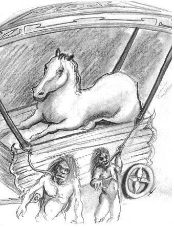

Ngựa-người dẫn tác giả đến nhà ở của mình - Mô tả căn nhà này - Cuộc đón tiếp với tác giả - Thức ăn của Ngựa-người - Tác giả băn khoăn là mình sẽ ăn gì ở đất nước này - Lối thoát khỏi tình thế khó xử - Ở đây tác giả đã ăn uống như thế nào.
Sau khi đi chừng ba dặm, chúng tôi đã đến một căn nhà thấp và dài. Tường nhà được làm từ những cọc gỗ nhỏ đóng xuống đất và dùng các cành cây nhỏ bện lại, còn mái làm từ rơm rạ. Khi nhìn thấy căn nhà ở này tôi thở phào nhẹ nhõm và rút từ trong túi ra một số thứ lặt vặt. Tôi hy vọng rằng nhờ các thứ lặt vặt ấy mà chủ nhân căn nhà sẽ đối xử với tôi niềm nở hơn. Con ngựa mà tôi quen mời tôi bước vào trước và tôi thấy mình bước vào một căn phòng rộng có nền nhà bằng đất nện nhẵn; dọc theo một bên tường có một cái máng mắt cáo để cỏ khô. Ở đó có ba con ngựa đực và hai con ngựa cái con; chúng không đứng cạnh máng cỏ và cũng không ăn mà ngồi xổm như kiểu chó ngồi khiến tôi rất lấy làm lạ. Nhưng cái làm tôi ngạc nhiên hơn cả là khi tôi thấy các con ngựa khác đang bận các công việc nội trợ. Tất cả những điều đó cuối cùng đã củng cố giả thuyết ở tôi cho rằng một dân tộc biết huấn luyện các con vật không có lý trí đến như vậy thì hiển nhiên phải hơn hẳn các dân tộc khác trên trái đất về trí thông minh của mình. Con ngựa xám bước vào ngay sau tôi có lẽ để ngừa trước sự đón tiếp không được tử tế từ phía các con ngựa khác. Nó hý mấy lần với cái giọng sai khiến của ông chủ và những con ngựa khác ngay lập tức ngoan ngoãn vâng lời.
Ngoài căn phòng này, còn có ba căn phòng khác bố trí phòng nọ tiếp phòng kia dọc căn nhà. Chúng nối với nhau bằng các cửa ra vào rộng. Các cửa được đục vào tường cái nọ đối diện với cái kia do đó tạo nên một lối đi thẳng suốt từ phòng đầu tới phòng cuối cùng. Chúng tôi đi qua căn phòng thứ hai. Khi đó con ngựa xám ra dấu cho tôi đứng đợi còn bản thân đi vào phòng thứ ba. Tôi đứng lại ở phòng thứ hai và đã chuẩn bị quà tặng cho chủ nhân ngôi nhà: hai con dao, ba cái vòng có các hạt ngọc trai nhỏ, một cái gương con và chuỗi hạt cườm. Con ngựa bắt đầu hý lên ba hay bốn lần và tôi chú ý nghe hy vọng thấy có giọng người trả lời. Nhưng tôi chỉ nghe thấy cũng tiếng hý như thế chỉ có điều âm thanh của nó dịu dàng hơn và dễ nghe hơn. Tôi bất giác nghĩ: “ Hẳn ngôi nhà này thuộc một nhân vật rất quan trọng do đó cần phải chuẩn bị biết bao là nghi thức trước khi cho phép tôi vào gặp chủ nhân”. Nhưng chả lẽ nhân vật quan trọng ấy lại chẳng có một người hầu nào khác ngoài những con ngựa? Điều đó, tôi quả là không hiểu nổi. Tôi bỗng sợ hãi: phải chăng lý trí của tôi đã bị lầm lẫn sau những tổn thất và khổ đau mà tôi gặp phải? Tôi thu hết nghị lực quan sát cẩn thận xung quanh: căn phòng mà tôi đang đứng cũng được bố trí như căn phòng đầu tiên chỉ có cái là trông hoa lệ hơn nhiều. Tôi phải mấy lần giụi mắt - trước mặt tôi vẫn cũng chính các vật ấy. Tôi bắt đầu tự véo tay và hai bên sườn để mình tỉnh lại vì từng phút một tôi có cảm giác như đang trông thấy những thứ này trong mộng. Nhưng những cú véo cũng chẳng giúp được cho tôi: tôi vẫn thấy căn phòng ấy, cũng nền đất ấy và cũng cái máng cỏ ấy. Cuối cùng tôi dừng lại ở ý nghĩ là tất cả các điều đó chỉ là điều kỳ diệu và ma quái. Vào lúc ấy con ngựa xám lại xuất hiện ở cửa và ra dấu mời tôi vào phòng thứ ba theo nó, ở đấy tôi nhìn thấy một con ngựa cái rất đẹp và hai chú ngựa con. Chúng ngồi gập chân sau xuống, dưới trèn một cái chiếu rơm được dệt rất đẹp và sạch sẽ.
Khi tôi bước vào, con ngựa cái ngay lập tức đứng dậy khỏi chiếu và tiến lại gần tôi. Nó chăm chú nhìn vào mặt và tay tôi và quay ngoắt lại với vẻ hết sức kinh tởm. Sau đó nó hướng vào con ngựa xám và tôi nghe thấy trong câu chuyện của chúng thường lặp đi lặp lại từ “Yahoo” mà ý nghĩa của nó cho đến giờ tôi vẫn chưa biết. Trời ơi! Chỉ khi tôi bị hạ nhục đến mức cực kỳ thì tôi mới nhanh chóng biết từ đó nghĩa là gì.
Con ngựa xám gật đầu với tôi và nhắc lại từ “guun”, “guun” mà tôi thường nghe được trên đường về đây và từ đó có nghĩa là ra lệnh theo nó, và tôi được dẫn ra sân sau. Ở đây hơi cách xa căn nhà có một kho chứa đồ khá lớn. Chúng tôi bước vào đó và tôi nhìn thấy ba động vật gớm guốc giống như những con mà tôi phải chống đỡ dưới cái cây. Chúng đang hau háu ăn những củ cây và thịt sống trông chẳng đẹp mắt chút nào. Những thịt ấy cuối cùng tôi cũng nhận ra đó là thịt xác chết của chó, lừa và bò. Cả ba con đều có một cái vòng bằng cây liễu chắc chắn quấn quanh cổ và buộc vào một cây gỗ lớn. Chúng giữ thức ăn bằng các móng chân trước và dùng răng cắn xé.
Ngựa-chủ nhân ra lệnh cho người hầu của mình, một con ngựa tía con cởi dây buộc cho một con vật lớn nhất trong số ba con ấy và dẫn nó ra ngoài sân. Sau khi đặt nó đứng cạnh tôi cả chủ và tớ bắt đầu ngắm nghía so sánh chúng tôi sau đó mấy lần nhắc đi nhắc lại từ “Yahoo”. Không thể nào tả được nỗi kinh khiếp và ngạc nhiên xâm chiếm tôi khi tôi nhận thấy rằng con vật ghê tởm ấy về hình dáng bên ngoài hoàn toàn giống con người. Thật vậy, mặt của nó nhẵn và to, mũi tẹt, môi dày và miệng rộng, mà những đặc điểm ấy thường gặp ở những người man rợ, bởi vì những người mẹ không bao giờ đặt con mình xuống đất mà cõng chúng trên lưng, do đó đứa trẻ thường xuyên cọ mũi vào vai của mẹ. Chân trước của Yahoo khác với tay của tôi chỉ ở các móng dài, da thô, lòng bàn tay màu nâu và cuối cùng là mu bàn tay có phủ lông. Chính xác là chân sau của Yahoo cũng không quá đặc biệt với chân tôi. Tôi nhận ra điều đó ngay lập tức mặc dù các con ngựa có thể không nhận thấy điều gì, bởi vì chân tôi mang giày và tất.
Hơn nữa rõ ràng cả hai con ngựa không có khái niệm gì về cái áo khoác dài của tôi. Chúng hoàn toàn không biết đó là cái gì mà chính nhờ vậy cơ thể của tôi hoàn toàn khác biệt với cơ thể của Yahoo.
Con ngựa tía đưa cho tôi một củ cây gì đó, được giữ giữa móng và cổ chân. Tôi cầm củ cây ấy, ngửi nó và rất lịch thiệp đưa trả lại. Khi đó nó đem lại một miếng thịt lừa từ căn nhà bẩn thỉu của Yahoo, nhưng miếng thịt có mùi khó chịu đến nỗi tôi kinh tởm quay đi. Con ngựa con bèn ném miếng thịt cho Yahoo và con vật này liền vồ ngay lấy. Sau đó nó đem cho tôi một ôm cỏ khô và một đấu đầy lúa kiều mạch nhưng tôi lắc đầu ra dấu rằng chẳng món ăn này hay món kia hợp với tôi cả. Ngay khi đó tôi thấy đây không phải là chuyện đùa, lần đầu tiên tôi có ý nghĩ rằng nếu như tôi không gặp ở đây một ai giống với mình thì có lẽ mình sẽ bị chết đói. Đương nhiên là loại động vật Yahoo không thể nào được tính vào đây.Chỉ nội ý nghĩ so sánh các động vật bẩn thỉu này với con người đã khiến tôi nổi giận và phẫn nộ cực điểm. Chưa bao giờ tôi nhìn thấy một sinh vật lại ghê tởm và đáng khinh hơn và càng được tiếp xúc thêm với chúng trong thời gian lưu lại đất nước này thì tôi càng trở nên căm ghét chúng hơn nữa. Sau đó con ngựa quay lại chỗ tôi và đưa móng chân trước lên miệng làm một số dấu hiệu khác như muốn biết tôi sẽ ăn gì. Nhưng tôi không biết câu trả lời như thế nào để cho nó hiểu được. Hơn nữa, nếu nó có hiểu được tôi thì liệu nó có thể giúp tôi trong việc này được chăng. Thực chất nó có thể lấy được từ đâu loại thức ăn hợp với tôi?
Trong lúc đó một con bò đi ngang qua chỗ chúng tôi. Tôi chỉ ngón tay vào con bò và biểu lộ ý muốn đến gần và vắt sữa nó. Người ta đã hiểu ý tôi và vì thế con ngựa xám đã đưa tôi quay trở lại ngôi nhà và ra lệnh cho một con ngựa cái-hầu cận mở cửa một căn phòng trong đó có vô số chai lọ bằng đất sét và bằng gỗ chứa đầy sữa được sắp xếp rất ngăn nắp. Con ngựa cái đưa cho tôi một bát sữa lớn và tôi vui lòng uống cạn, sau đó tôi cảm thấy mình khỏe và tỉnh hẳn ra.

Vào lúc gần trưa có một cỗ xe kéo giống như cỗ xe trượt đến nhà, cỗ xe này do bốn con Yahoo kéo. Trên cỗ xe có một con ngựa già ngồi, rõ ràng đó là một nhân vật quyền quý. Con ngựa già bước ra khỏi xe, đứng dựa trên chân sau bởi vì chân trước bên trái bị đau. Con ngựa này đến đây ăn trưa với chủ nhân của tôi và được chủ nhân đón tiếp rất long trọng. Chúng ăn trưa trong căn phòng đẹp nhất; món thứ hai là món kiều mạch nấu bằng sữa: vị khách ăn món này dưới dạng nóng sốt, còn những con ngựa khác thì lại ăn nguội. Máng cỏ thì đặt thành một vòng nhỏ ở chính giữa phòng trong đó đã chia thành từng phần theo số có mặt đang ngồi nghiêm chỉnh trên rơm. Trên máng cỏ treo một cái lưới lớn chứa cỏ khô, cũng được chia thành từng phần. Mỗi con ngựa ăn phần cỏ khô của mình cùng với suất cháo kiều mạch nấu sữa. Tất cả diễn ra rất đúng phép tắc và nghiêm chỉnh. Những con ngựa con xử sự rất khiêm tốn còn chủ nhân thì hết sức lịch thiệp và niềm nở với vị khách của mình. Con ngựa xám ra lệnh cho tôi lại gần nó và bắt đầu hý lên kể cho các bạn mình một câu chuyện dài về tôi. Tôi đoán ra điều này vì rằng vị khách thường đưa mắt nhìn tôi trong câu chuyện và nhiều khi thấy từ “Yahoo”. Đút tay vào túi tôi thấy có găng tay trong đó. Tôi sực nghĩ ra là đi găng tay và ra dấu hỏi cái gì đã xảy ra với hai chân trước của tôi. Mấy lần nó đụng móng vào chúng dường như để tôi hiểu cần làm cho chúng trở về như trước đây. Tôi vâng lời cất găng tay và đút nó vào túi.
Chuyện xảy ra này đã gây nên một cuộc tranh luận sôi nổi và tôi nhận thấy rằng hành động của tôi đã làm mọi cái có lợi cho tôi. Người ta ra lệnh cho tôi phát âm những từ mà tôi tiếp thu được. Trong bữa ăn trưa chủ nhân dạy tôi học cách gọi tên lúa kiều mạch, sữa, ngọn lửa, nước và một số đối tượng khác. Tôi học thuộc những từ này không có khó khăn gì lắm bởi vì ngay từ lúc còn trẻ tôi đã tỏ ra rất có khả năng về ngôn ngữ.
Sau bữa ăn trưa Ngựa-chủ nhân dẫn tôi ra một phía và biểu lộ bằng cử chỉ và bằng lời sự không yên lòng của mình về việc tôi không ăn gì. Cho đến giờ tôi vẫn chưa đụng đến kiều mạch. Nhưng tôi chợt nảy ra ý nghĩ rằng từ kiều mạch có thể làm ra một thứ gì đấy đại loại như bánh mỳ. Còn bánh mỳ và sữa tạo cho tôi khả năng tàm tạm sống cho đến khi có cơ hội đến được một đất nước nào khác có những người như tôi. Trong ngôn ngữ Houyhnhnm kiều mạch được gọi là hlunnh. Mấy lần tôi nhắc lại từ này. Vị chủ nhân ngay lập tức ra lệnh cho một con ngựa cái trắng hầu cận mang kiều mạch đựng trong một cái bát gỗ đến. Tôi mới đem rang qua kiều mạch trên bếp sau đó đem xát cho chúng tróc hết vỏ. Tôi tiếp tục nghiền hạt kiều mạch giữa hai hòn đá thành bột, hòa nước và làm thành bột nhão, đem nướng trên bếp và ăn nóng cùng với sữa. Thoạt tiên món ăn rất phổ biến ở nhiều nước châu Âu này đối với tôi thật chẳng ngon lành chút nào. Nhưng dần dần tôi đã quen với nó. Hơn nữa trong chuyến du lịch lần này tôi đã phải nhiều lần bằng lòng với món ăn thô lậu nhất và rốt cuộc tôi tin rằng dù có thế nào đi chăng nữa con người cũng cần phải sống.
Sự thật, đôi khi tôi cũng bắt được bằng bẫy làm từ tóc của Yahoo, một con thỏ hoặc một con chim nào đó; đôi khi tôi tìm được các thứ cỏ ăn được mà tôi nấu và ăn chúng dưới dạng gia vị vào món bánh nướng của tôi; thỉnh thoảng tôi tự làm bơ cho mình và uống nước sữa trong.
Thoạt đầu tôi rất khổ sở khi thiếu muối nhưng rồi tôi nhanh chóng làm quen với tình trạng này.
Xưa kia muối chỉ được sử dụng trong các bữa tiệc lớn để kích thích việc uống; dần dần mọi người mọi nơi quen dùng nó. Chính chúng ta cũng chẳng biết một loài động vật nào mà lại thích ăn muối. Bất luận thế nào đi nữa tôi cũng cần nói thêm rằng dù có hoàn toàn thiếu muối, dù thức ăn có thô lậu và nghèo nàn nhưng trong suốt thời gian tôi lưu lại trên đảo tôi chưa bao giờ bị ốm.
Lúc trời bắt đầu tối Ngựa-chủ nhân bố trí cho tôi một căn nhà đặc biệt cách nhà chủ nhân chừng sáu yard và tách biệt với chuồng Yahoo. Tôi tìm ở đó một ít rơm, trải áo khoác lên và ngủ rất say. Chẳng bao lâu sau tôi đã bố trí chỗ ở tiện nghi hơn mà độc giả sẽ biết trong câu chuyện kể chi tiết cuộc sống của tôi trên đất nước này.